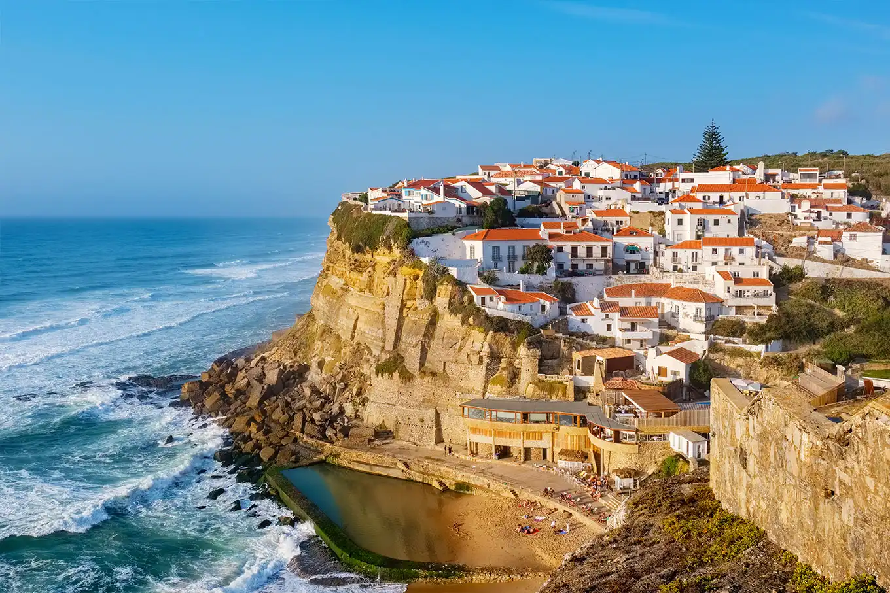
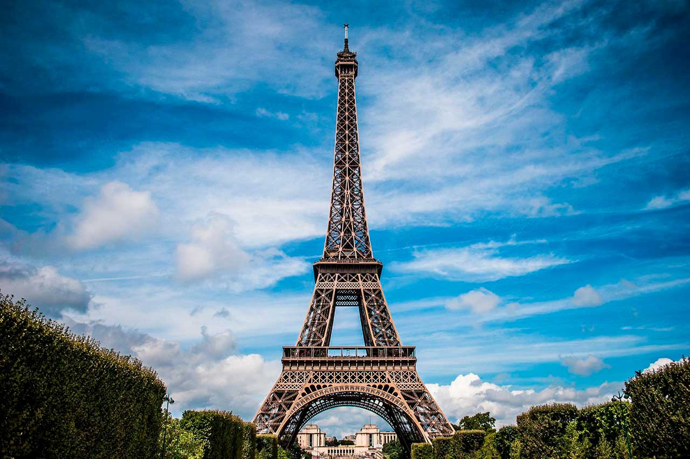

Viajar pela Europa é como folhear um livro cheio de história, arte, sabores e paisagens de tirar o fôlego. Cada país tem sua própria personalidade, e o melhor é que tudo está relativamente pertinho, o que permite explorar vários destinos em uma só viagem. Aqui vão 4 países europeus que são imperdíveis:
Itália
A Itália é um sonho para quem ama história, gastronomia e aquele charme europeu clássico. Roma é praticamente um museu a céu aberto, Florença respira arte renascentista, Veneza é pura poesia e a Costa Amalfitana parece um cenário de filme. Ah, e a comida? Simplesmente maravilhosa — pizza, massa, gelato... precisa dizer mais?

Portugal
Portugal é acolhedor, bonito e cheio de experiências autênticas. Lisboa encanta com seus miradouros e bondinhos, o Porto com seus vinhos e arquitetura, e o sul (Algarve) com praias cinematográficas. É um país fácil de se apaixonar — tanto pelos lugares quanto pelas pessoas. E sim, os pastéis de nata são ainda melhores ao vivo!
França
Muito além de Paris (que por si só já vale a viagem), a França oferece castelos no Vale do Loire, campos de lavanda na Provença, vinícolas na Borgonha e vilarejos que parecem ter parado no tempo. É o destino ideal pra quem busca uma mistura de sofisticação, romantismo e cultura — com baguetes, queijos e vinhos como bônus.
República Tcheca
Um destino menos óbvio, mas absolutamente encantador. Praga, sua capital, é uma das cidades mais bonitas da Europa, com sua arquitetura gótica, ruas de paralelepípedo e aquele clima de conto de fadas. E o melhor: é um dos países mais acessíveis do continente, ótimo para quem quer economizar sem abrir mão da beleza.